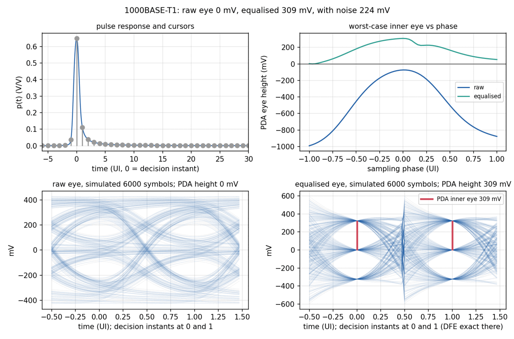
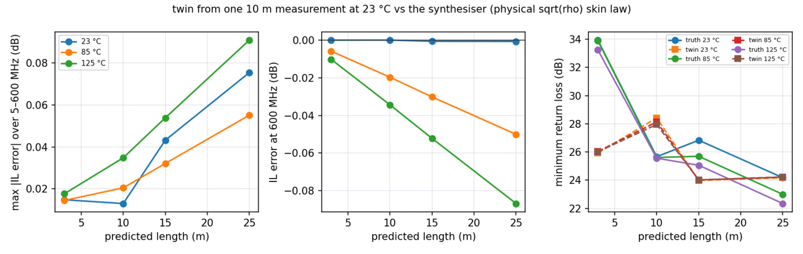
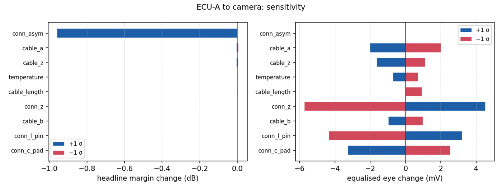
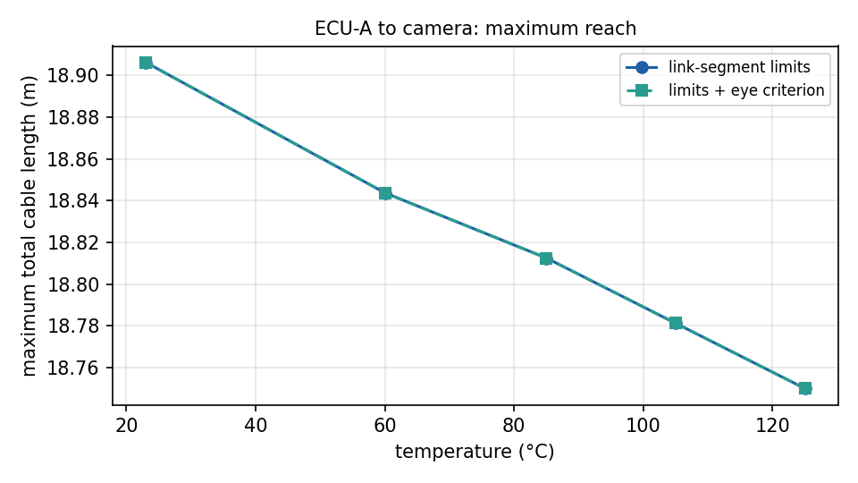
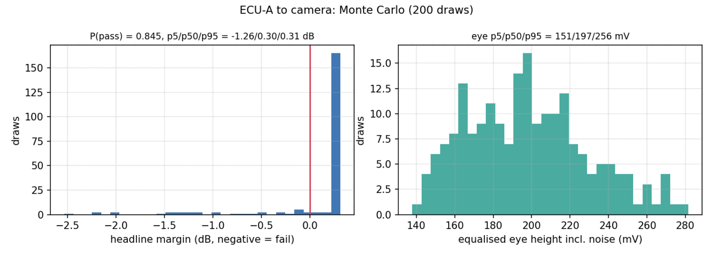

linktwin
Predicts whether a complete Ethernet harness will pass — and what the receiver actually sees — before the harness exists.
The problem
A harness engineer must commit — months before the first physical sample exists — to a cable, a length, a number of inline connectors and a routing temperature. The standard the finished link must pass is written for measurements of finished links. Between the commitment and the first measurement lies the entire tooling budget.
The question every layer below this one was built to make answerable: will the link work, before the harness exists?
What was built
A full-link digital twin: real measured (or predicted) cable physics, compact connector and PCB models, cascaded exactly, judged by the same evaluator a measured harness faces — then taken all the way to the receiver's eye.
Takes
- A harness description in TOML — elements in order, standard, PHY, temperature, tolerances
- A cable from measurement, archive, production record or data sheet
- Connector and PCB parameters — or measured four-ports as elements
Produces
- Pass/fail with margin and worst frequency, per quantity
- The eye at the receiver: raw, equalised, with noise at BER 10⁻¹²
- Maximum reach and connector budget against temperature
- P(pass) and the tolerance that actually decides the design
The hard part
Three problems had to be solved for the twin to be trustworthy rather than plausible. First, causality: predicting a receiver eye requires the channel far beyond the measured band, and an attenuation law without its matching phase produces pulses that arrive before they are sent — so the per-metre model is minimum-phase by construction, with the skin-effect loss and its dispersion as a Hilbert pair. Second, structure: three loss coefficients cannot carry a real cable's impedance ripple, so the measured structure rides on the smooth model as a stored residual — and the part of it that is measurement noise is kept out of the time domain, where a worst-case eye analysis would otherwise sum it into fictitious interference. Third, temperature: copper's skin resistance scales as √ρ(T), the model applies exactly that, and a switch reproduces the simpler convention of the synthetic stack so validation can face either truth.

Checked against ground truth
The twin is built from one noisy 10 m measurement, then interrogated about cables and harnesses it has never seen. Truth is the synthesiser it has no access to.
| What was checked | Result |
|---|---|
| Insertion loss, 3–25 m, 23–125 °C | ≤ 0.1 dB over 5–600 MHz |
| Extrapolation to 2.5 GHz — an octave past the band | ≤ 0.04 dB |
| Whole harness vs one built from true pieces | same verdict, headline within 0.002 dB |
| Worst-case eye vs 6,000-symbol simulation, 5 m | 420 mV bound vs 421 mV simulated |
| Same, 15 m | 311 mV vs 311 mV |
| Production-predicted cable, 15 m at 85 °C | fails by 0.02 dB, P(pass) = 0.02 — known before extrusion |




What it does not claim
From the report's own limitations section:
- The impedance pattern of a different physical piece of the same cable is not predictable — return-loss minima land within about 3 dB, stated as such.
- Equalisation is ideal (zero-forcing FFE, correct-decision DFE): the eye is an upper bound on an implementation.
- Single pair; alien and pair-to-pair crosstalk enter only as a noise term.
- Validated against the synthesiser — the honest boundary of the whole toolchain, stated everywhere it applies.
Where it sits in the toolchain
Every arrow in the architecture ends here. cablecheck judges the assembled link; labauto archives are cable sources with verified provenance; labplatform budgets set the Monte Carlo's uncertainties; cableanalytics lets a cable that exists only as production data enter a harness with error bars. The final question stops being "what did this cable measure?" and becomes "will the link work?" — answered with a margin, an eye, and a probability.